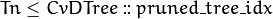
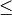
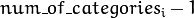
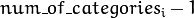

Decision Trees¶
The ML classes discussed in this section implement Classification and Regression Tree algorithms described in [Breiman84].
The class
CvDTree represents a single decision tree that may be used alone or as a base class in tree ensembles (see
Boosting and
Random Trees ).
A decision tree is a binary tree (tree where each non-leaf node has two child nodes). It can be used either for classification or for regression. For classification, each tree leaf is marked with a class label; multiple leaves may have the same label. For regression, a constant is also assigned to each tree leaf, so the approximation function is piecewise constant.
Predicting with Decision Trees¶
To reach a leaf node and to obtain a response for the input feature vector, the prediction procedure starts with the root node. From each non-leaf node the procedure goes to the left (selects the left child node as the next observed node) or to the right based on the value of a certain variable whose index is stored in the observed node. The following variables are possible:
- Ordered variables. The variable value is compared with a threshold that is also stored in the node. If the value is less than the threshold, the procedure goes to the left. Otherwise, it goes to the right. For example, if the weight is less than 1 kilogram, the procedure goes to the left, else to the right.
- Categorical variables. A discrete variable value is tested to see whether it belongs to a certain subset of values (also stored in the node) from a limited set of values the variable could take. If it does, the procedure goes to the left. Otherwise, it goes to the right. For example, if the color is green or red, go to the left, else to the right.
So, in each node, a pair of entities (variable_index , decision_rule
(threshold/subset) ) is used. This pair is called a split (split on
the variable variable_index ). Once a leaf node is reached, the value
assigned to this node is used as the output of the prediction procedure.
Sometimes, certain features of the input vector are missed (for example, in the darkness it is difficult to determine the object color), and the prediction procedure may get stuck in the certain node (in the mentioned example, if the node is split by color). To avoid such situations, decision trees use so-called surrogate splits. That is, in addition to the best “primary” split, every tree node may also be split to one or more other variables with nearly the same results.
Training Decision Trees¶
The tree is built recursively, starting from the root node. All training data (feature vectors and responses) is used to split the root node. In each node the optimum decision rule (the best “primary” split) is found based on some criteria. In machine learning, gini “purity” criteria are used for classification, and sum of squared errors is used for regression. Then, if necessary, the surrogate splits are found. They resemble the results of the primary split on the training data. All the data is divided using the primary and the surrogate splits (like it is done in the prediction procedure) between the left and the right child node. Then, the procedure recursively splits both left and right nodes. At each node the recursive procedure may stop (that is, stop splitting the node further) in one of the following cases:
- Depth of the constructed tree branch has reached the specified maximum value.
- Number of training samples in the node is less than the specified threshold when it is not statistically representative to split the node further.
- All the samples in the node belong to the same class or, in case of regression, the variation is too small.
- The best found split does not give any noticeable improvement compared to a random choice.
When the tree is built, it may be pruned using a cross-validation procedure, if necessary. That is, some branches of the tree that may lead to the model overfitting are cut off. Normally, this procedure is only applied to standalone decision trees. Usually tree ensembles build trees that are small enough and use their own protection schemes against overfitting.
Variable Importance¶
Besides the prediction that is an obvious use of decision trees, the tree can be also used for various data analyses. One of the key properties of the constructed decision tree algorithms is an ability to compute the importance (relative decisive power) of each variable. For example, in a spam filter that uses a set of words occurred in the message as a feature vector, the variable importance rating can be used to determine the most “spam-indicating” words and thus help keep the dictionary size reasonable.
Importance of each variable is computed over all the splits on this variable in the tree, primary and surrogate ones. Thus, to compute variable importance correctly, the surrogate splits must be enabled in the training parameters, even if there is no missing data.
CvDTreeSplit¶
-
struct
CvDTreeSplit¶ The structure represents a possible decision tree node split. It has public members:
-
int
var_idx¶ Index of variable on which the split is created.
-
int
inversed¶ If it is not null then inverse split rule is used that is left and right branches are exchanged in the rule expressions below.
-
float
quality¶ The split quality, a positive number. It is used to choose the best primary split, then to choose and sort the surrogate splits. After the tree is constructed, it is also used to compute variable importance.
-
CvDTreeSplit*
next¶ Pointer to the next split in the node list of splits.
-
int[]
subset¶ Bit array indicating the value subset in case of split on a categorical variable. The rule is:
if var_value in subset then next_node <- left else next_node <- right
-
float
ord::c¶ The threshold value in case of split on an ordered variable. The rule is:
if var_value < ord.c then next_node<-left else next_node<-right
-
int
ord::split_point¶ Used internally by the training algorithm.
-
int
CvDTreeNode¶
-
struct
CvDTreeNode¶ The structure represents a node in a decision tree. It has public members:
-
int
class_idx¶ Class index normalized to 0..class_count-1 range and assigned to the node. It is used internally in classification trees and tree ensembles.
-
int
Tn¶ Tree index in a ordered sequence of pruned trees. The indices are used during and after the pruning procedure. The root node has the maximum value
Tnof the whole tree, child nodes haveTnless than or equal to the parent’sTn, and nodes with  are not used at prediction stage (the corresponding branches are considered as cut-off), even if they have not been physically deleted from the tree at the pruning stage.
-
double
value¶ Value at the node: a class label in case of classification or estimated function value in case of regression.
-
CvDTreeNode*
parent¶ Pointer to the parent node.
-
CvDTreeNode*
left¶ Pointer to the left child node.
-
CvDTreeNode*
right¶ Pointer to the right child node.
-
CvDTreeSplit*
split¶ Pointer to the first (primary) split in the node list of splits.
-
int
sample_count¶ The number of samples that fall into the node at the training stage. It is used to resolve the difficult cases - when the variable for the primary split is missing and all the variables for other surrogate splits are missing too. In this case the sample is directed to the left if
left->sample_count > right->sample_countand to the right otherwise.
-
int
depth¶ Depth of the node. The root node depth is 0, the child nodes depth is the parent’s depth + 1.
-
int
Other numerous fields of CvDTreeNode are used internally at the training stage.
CvDTreeParams¶
-
struct
CvDTreeParams¶
The structure contains all the decision tree training parameters. You can initialize it by default constructor and then override any parameters directly before training, or the structure may be fully initialized using the advanced variant of the constructor.
CvDTreeParams::CvDTreeParams¶
The constructors.
-
C++:
CvDTreeParams::CvDTreeParams()¶
-
C++:
CvDTreeParams::CvDTreeParams(int max_depth, int min_sample_count, float regression_accuracy, bool use_surrogates, int max_categories, int cv_folds, bool use_1se_rule, bool truncate_pruned_tree, const float* priors)¶ Parameters: - max_depth – The maximum possible depth of the tree. That is the training algorithms attempts to split a node while its depth is less than
max_depth. The actual depth may be smaller if the other termination criteria are met (see the outline of the training procedure in the beginning of the section), and/or if the tree is pruned. - min_sample_count – If the number of samples in a node is less than this parameter then the node will not be split.
- regression_accuracy – Termination criteria for regression trees. If all absolute differences between an estimated value in a node and values of train samples in this node are less than this parameter then the node will not be split.
- use_surrogates – If true then surrogate splits will be built. These splits allow to work with missing data and compute variable importance correctly.
- max_categories – Cluster possible values of a categorical variable into
Kmax_categoriesclusters to find a suboptimal split. If a discrete variable, on which the training procedure tries to make a split, takes more thanmax_categoriesvalues, the precise best subset estimation may take a very long time because the algorithm is exponential. Instead, many decision trees engines (including ML) try to find sub-optimal split in this case by clustering all the samples intomax_categoriesclusters that is some categories are merged together. The clustering is applied only inn>2-class classification problems for categorical variables withN > max_categoriespossible values. In case of regression and 2-class classification the optimal split can be found efficiently without employing clustering, thus the parameter is not used in these cases. - cv_folds – If
cv_folds > 1then prune a tree withK-fold cross-validation whereKis equal tocv_folds. - use_1se_rule – If true then a pruning will be harsher. This will make a tree more compact and more resistant to the training data noise but a bit less accurate.
- truncate_pruned_tree – If true then pruned branches are physically removed from the tree. Otherwise they are retained and it is possible to get results from the original unpruned (or pruned less aggressively) tree by decreasing
CvDTree::pruned_tree_idxparameter. - priors – The array of a priori class probabilities, sorted by the class label value. The parameter can be used to tune the decision tree preferences toward a certain class. For example, if you want to detect some rare anomaly occurrence, the training base will likely contain much more normal cases than anomalies, so a very good classification performance will be achieved just by considering every case as normal. To avoid this, the priors can be specified, where the anomaly probability is artificially increased (up to 0.5 or even greater), so the weight of the misclassified anomalies becomes much bigger, and the tree is adjusted properly. You can also think about this parameter as weights of prediction categories which determine relative weights that you give to misclassification. That is, if the weight of the first category is 1 and the weight of the second category is 10, then each mistake in predicting the second category is equivalent to making 10 mistakes in predicting the first category.
- max_depth – The maximum possible depth of the tree. That is the training algorithms attempts to split a node while its depth is less than
The default constructor initializes all the parameters with the default values tuned for the standalone classification tree:
CvDTreeParams() : max_categories(10), max_depth(INT_MAX), min_sample_count(10),
cv_folds(10), use_surrogates(true), use_1se_rule(true),
truncate_pruned_tree(true), regression_accuracy(0.01f), priors(0)
{}
CvDTreeTrainData¶
-
struct
CvDTreeTrainData¶
Decision tree training data and shared data for tree ensembles. The structure is mostly used internally for storing both standalone trees and tree ensembles efficiently. Basically, it contains the following types of information:
- Training parameters, an instance of
CvDTreeParams. - Training data preprocessed to find the best splits more efficiently. For tree ensembles, this preprocessed data is reused by all trees. Additionally, the training data characteristics shared by all trees in the ensemble are stored here: variable types, the number of classes, a class label compression map, and so on.
- Buffers, memory storages for tree nodes, splits, and other elements of the constructed trees.
There are two ways of using this structure. In simple cases (for example, a standalone tree or the ready-to-use “black box” tree ensemble from machine learning, like
Random Trees or
Boosting ), there is no need to care or even to know about the structure. You just construct the needed statistical model, train it, and use it. The CvDTreeTrainData structure is constructed and used internally. However, for custom tree algorithms or another sophisticated cases, the structure may be constructed and used explicitly. The scheme is the following:
- The structure is initialized using the default constructor, followed by
set_data, or it is built using the full form of constructor. The parameter_sharedmust be set totrue. - One or more trees are trained using this data (see the special form of the method
CvDTree::train()). - The structure is released as soon as all the trees using it are released.
CvDTree¶
-
class
CvDTree: publicCvStatModel¶
The class implements a decision tree as described in the beginning of this section.
CvDTree::train¶
Trains a decision tree.
-
C++:
CvDTree::train(const Mat& trainData, int tflag, const Mat& responses, const Mat& varIdx=Mat(), const Mat& sampleIdx=Mat(), const Mat& varType=Mat(), const Mat& missingDataMask=Mat(), CvDTreeParams params=CvDTreeParams() )¶
-
C++:
CvDTree::train(const CvMat* trainData, int tflag, const CvMat* responses, const CvMat* varIdx=0, const CvMat* sampleIdx=0, const CvMat* varType=0, const CvMat* missingDataMask=0, CvDTreeParams params=CvDTreeParams() )¶
-
C++:
CvDTree::train(CvMLData* trainData, CvDTreeParams params=CvDTreeParams() )¶
-
C++:
CvDTree::train(CvDTreeTrainData* trainData, const CvMat* subsampleIdx)¶
-
Python:
cv2.DTree.train(trainData, tflag, responses[, varIdx[, sampleIdx[, varType[, missingDataMask[, params]]]]]) → retval¶
There are four train methods in CvDTree:
- The first two methods follow the generic
CvStatModel::train()conventions. It is the most complete form. Both data layouts (tflag=CV_ROW_SAMPLEandtflag=CV_COL_SAMPLE) are supported, as well as sample and variable subsets, missing measurements, arbitrary combinations of input and output variable types, and so on. The last parameter contains all of the necessary training parameters (see theCvDTreeParamsdescription). - The third method uses
CvMLDatato pass training data to a decision tree. - The last method
trainis mostly used for building tree ensembles. It takes the pre-constructedCvDTreeTrainDatainstance and an optional subset of the training set. The indices insubsampleIdxare counted relatively to the_sample_idx, passed to theCvDTreeTrainDataconstructor. For example, if_sample_idx=[1, 5, 7, 100], thensubsampleIdx=[0,3]means that the samples[1, 100]of the original training set are used.
The function is parallelized with the TBB library.
CvDTree::predict¶
Returns the leaf node of a decision tree corresponding to the input vector.
-
C++:
CvDTree::predict(const Mat& sample, const Mat& missingDataMask=Mat(), bool preprocessedInput=false )const¶
-
C++:
CvDTree::predict(const CvMat* sample, const CvMat* missingDataMask=0, bool preprocessedInput=false )const¶
-
Python:
cv2.DTree.predict(sample[, missingDataMask[, preprocessedInput]]) → retval¶ Parameters: - sample – Sample for prediction.
- missingDataMask – Optional input missing measurement mask.
- preprocessedInput – This parameter is normally set to
false, implying a regular input. If it istrue, the method assumes that all the values of the discrete input variables have been already normalized to to  ranges since the decision tree uses such normalized representation internally. It is useful for faster prediction with tree ensembles. For ordered input variables, the flag is not used.
to  ranges since the decision tree uses such normalized representation internally. It is useful for faster prediction with tree ensembles. For ordered input variables, the flag is not used.
The method traverses the decision tree and returns the reached leaf node as output. The prediction result, either the class label or the estimated function value, may be retrieved as the value field of the CvDTreeNode structure, for example: dtree->predict(sample,mask)->value.
CvDTree::calc_error¶
Returns error of the decision tree.
-
C++:
CvDTree::calc_error(CvMLData* trainData, int type, std::vector<float>* resp=0 )¶ Parameters: - trainData – Data for the decision tree.
- type –
Type of error. Possible values are:
- CV_TRAIN_ERROR Error on train samples.
- CV_TEST_ERROR Error on test samples.
- resp – If it is not null then size of this vector will be set to the number of samples and each element will be set to result of prediction on the corresponding sample.
The method calculates error of the decision tree. In case of classification it is the percentage of incorrectly classified samples and in case of regression it is the mean of squared errors on samples.
CvDTree::getVarImportance¶
Returns the variable importance array.
-
C++:
CvDTree::getVarImportance()¶
-
C++:
CvDTree::get_var_importance()¶
-
Python:
cv2.DTree.getVarImportance() → retval¶
CvDTree::get_root¶
Returns the root of the decision tree.
-
C++:
CvDTree::get_root()const¶
CvDTree::get_pruned_tree_idx¶
Returns the CvDTree::pruned_tree_idx parameter.
-
C++:
CvDTree::get_pruned_tree_idx()const¶
The parameter DTree::pruned_tree_idx is used to prune a decision tree. See the CvDTreeNode::Tn parameter.
CvDTree::get_data¶
Returns used train data of the decision tree.
-
C++:
CvDTree::get_data()const¶
Example: building a tree for classifying mushrooms. See the mushroom.cpp sample that demonstrates how to build and use the
decision tree.
| [Breiman84] | Breiman, L., Friedman, J. Olshen, R. and Stone, C. (1984), Classification and Regression Trees, Wadsworth. |
Help and Feedback
You did not find what you were looking for?- Ask a question on the Q&A forum.
- If you think something is missing or wrong in the documentation, please file a bug report.

Table Of Contents
- Decision Trees
- Predicting with Decision Trees
- Training Decision Trees
- Variable Importance
- CvDTreeSplit
- CvDTreeNode
- CvDTreeParams
- CvDTreeParams::CvDTreeParams
- CvDTreeTrainData
- CvDTree
- CvDTree::train
- CvDTree::predict
- CvDTree::calc_error
- CvDTree::getVarImportance
- CvDTree::get_root
- CvDTree::get_pruned_tree_idx
- CvDTree::get_data